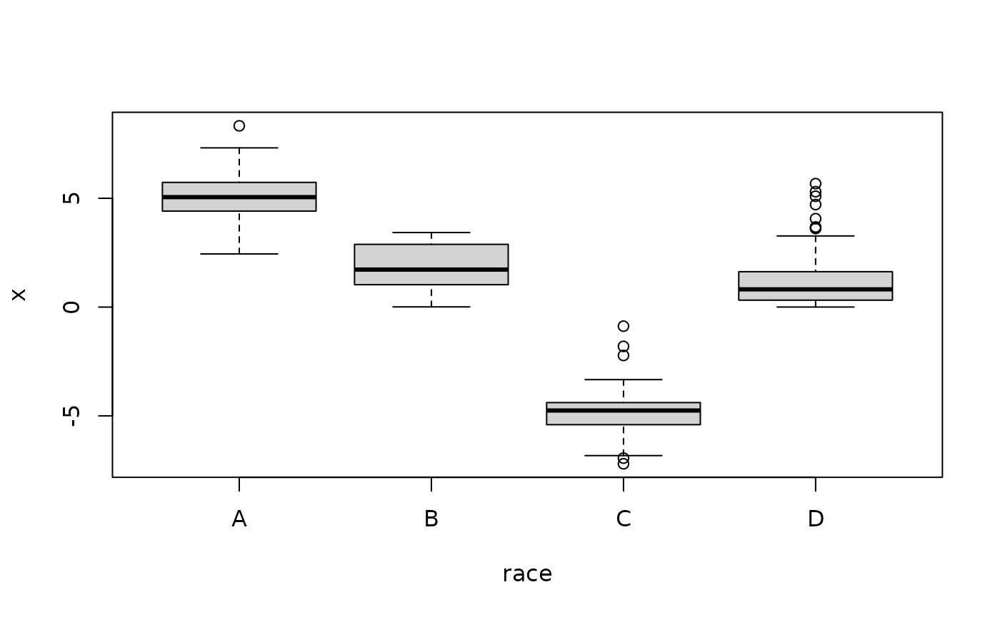

The 'ABCs' of `lmabc`: linear regression with categorical covariates
Source:vignettes/introduction.Rmd
introduction.RmdOverview
Regression analysis commonly features categorical (or nominal) covariates, such as race, sex, group/experimental assignments, and many other examples. These variables may appear alongside other covariates, as in the main-only (or ANCOVA) model
y ~ x + race
or interacted with other variables, as in the group-modified model
y ~ x + race + x:race
(here we use race as our default categorical variable
for clarity).
The group-modified model estimates group-specific effects of
x on the response y (e.g., does exposure to a
pollutant x more adversely impact the health y
of certain subpopulations?). Specifically, the linear model expresses
the expectation of the response variable y at given
x and race values:
(here x is continuous). As
a result, we obtain group-specific intercepts,
and group-specific slopes,
The main-only model is recovered when
for all race groups
.
Then the slope is global and does not depend on race:
.
However, both the main-only and the group-modified models have too many parameters. This is known as the “dummy variable trap”: to numerically encode levels of a categorical variable, only dummy variables are needed. Here, both models have group-specific intercepts, yet these are parametrized by group-specific coefficients and a global coefficient . Clearly, this uses one more parameter than necessary. A similar problem occurs for group-specific slopes. Without modification, these parameters are not estimable or interpretable.
The central question is then, how best to parametrize (or constrain) these group-specific intercepts and slopes? The choice has significant implications for statistical efficiency, equitability, and interpretability.
Example Dataset
We generate a simulated dataset with a continuous response variable
y, a continuous covariate x, and two
categorical variables, race and sex.
To mimic the challenges of real data analysis, the simulated
covariates are dependent: x depends on
race, both in mean and distribution,

while race and sex are highly dependent
categorical variables:
| A | B | C | D | |
|---|---|---|---|---|
| uu | 0.292 | 0.126 | 0.058 | 0.078 |
| vv | 0.056 | 0.028 | 0.104 | 0.258 |
We will consider estimation and inference with various combinations
of the predictors x, race, and
sex (and their interactions). The race and
sex variables use arbitrary labeling to avoid any
misleading race- or sex-specific effects in our example regression
output.
Default strategies: the problem
Suppose we call lm to fit the group-modified model:
fit_lm = lm(y ~ x + race + x:race)The summary() output appears as follows:
| Estimate | Std. Error | t value | Pr(>|t|) | |
|---|---|---|---|---|
| (Intercept) | 1.95 | 0.35 | 5.62 | 0.00 |
| x | 1.51 | 0.07 | 22.40 | 0.00 |
| raceB | -1.27 | 0.41 | -3.14 | 0.00 |
| raceC | -2.36 | 0.60 | -3.94 | 0.00 |
| raceD | -0.96 | 0.36 | -2.64 | 0.01 |
| x:raceB | -0.86 | 0.12 | -7.17 | 0.00 |
| x:raceC | -0.59 | 0.12 | -4.93 | 0.00 |
| x:raceD | -0.56 | 0.09 | -6.02 | 0.00 |
Immediately, we notice the absence of raceA and
x:raceA. This occurs by design: lm uses
reference group encoding (RGE), which parametrizes the model by
deleting a reference group, here
and
.
There are several limitations of this approach.
First, the x effect is misleading: because
,
the “global” slope parameter is
i.e., the group-specific x
effect for the reference group (race = A).
However, this is not clear from the model output, which instead appears
to present a “global” x effect. This presentation invites
mistaken conclusions about the x effect for the broader
population.
Second, this output is inequitable: it elevates one group
above all others. The reference group is often selected to be White for
race, Male for sex, etc., and thus induces a
bias in the presentation of results. Similarly, the x:race
effects are presented as deviations from the reference group
x effect: for example x:raceB refers to the
difference between the x effect for group B
and the x effect for the reference group A.
This implicitly treats one group as “normal” and the others as
“deviations from normal.”
Third, RGE is not well-designed to include interactions like
x:race. In addition to the difficulties with
interpretations and equitability, RGE is statistically
inefficient for the main effects. To see this, consider the
estimates and inference for the x effect under the
main-only model y ~ x + race:
| Estimate | Std. Error | t value | Pr(>|t|) | |
|---|---|---|---|---|
| x | 1.08 | 0.04 | 26.39 | 0 |
The estimates and standard errors of the x effect are
considerably different. This occurs because here, the x
effect refers to a global slope,
,
rather than a (reference) group-specific slope—even though the output
appears exactly the same. Usually, the standard errors will
increase when x:race is included, since the slope
is restricted to a subset of the data.
In aggregate, default lm output under RGE is at best
difficult to interpret and at worst outright misleading. It suffers from
alarming inequities and sacrifices statistical efficiency in the
presence of (x:race) interactions. These issues also occur
for the intercept parameters and compound for multiple categorical
variables and interactions.
Abundance-Based Constraints (ABCs): the solution
Instead, suppose we call lmabc to fit the group-modified
model:
The summary() output appears as follows:
| Estimate | Std. Error | t value | Pr(>|t|) | |
|---|---|---|---|---|
| (Intercept) | 2.85 | 0.14 | 20.71 | 0.00 |
| x | 1.09 | 0.04 | 28.23 | 0.00 |
| raceA | 1.58 | 0.19 | 8.28 | 0.00 |
| raceB | -1.10 | 0.16 | -6.71 | 0.00 |
| raceC | -1.74 | 0.55 | -3.18 | 0.00 |
| raceD | -0.29 | 0.14 | -2.03 | 0.04 |
| x:raceA | 0.42 | 0.05 | 7.74 | 0.00 |
| x:raceB | -0.44 | 0.09 | -4.86 | 0.00 |
| x:raceC | -0.18 | 0.09 | -1.94 | 0.05 |
| x:raceD | -0.14 | 0.05 | -2.70 | 0.01 |
First, every race group is represented: the results do
not elevate any single race group above the
others. This eliminates the presentation bias and provides more
equitable output.
Second, the x effect estimates and standard errors are
nearly identical to those in the main-only model
(
1.08,
0.04). This illustrates two remarkable invariance properties of
ABCs:
- The estimated
xeffects undery ~ x + raceandy ~ x + race + x:raceare nearly identical; and
- The standard errors of the
xeffects undery ~ x + raceandy ~ x + race + x:raceare- Nearly identical when the
x:raceeffect is small or - Smaller for the group-modified model when the
x:raceeffect is large.
- Nearly identical when the
In effect, ABCs allow the inclusion of (x:race)
interactions “for free”: they have (almost) no impact on estimation and
inference for the main x effect. With ABCs, the analyst can
estimate group-specific x effects without worrying that the
addition of x:race will sacrifice power for the main
x effect (which occurs for RGE). And, when the interaction
effect x:race is substantial, the analyst gains more
power for the main x effect.
We emphasize several features of these invariance properties:
- They are unique to ABCs and do not occur for alternative approaches (default RGE, sum-to-zero constraints, etc.);
- They make no requirements about the true data-generating process; and
- They allow for dependencies between
xandrace(as in this simulated dataset).
The only condition is that, for continuous x, the scale
of x must be approximately the same within each
race group (no conditions are needed when x is
categorical; see below). This is reasonable: if a “one-unit change in
x” is not comparable for different race
groups, then only the group-modified model that includes
race-specific slopes is meaningful. In that case, there is
no reason to consider the x effect under the main-only
model. Empirically, these (near) invariance results are quite robust to
this condition.
Finally, these results improve interpretability: all
group-specific coefficients
(e.g., x:raceB) now represent the difference between the
group-specific slope,
,
and the properly global x effect
.
Similar interpretations apply to the intercept parameters.
ABCs: some details
ABCs identify the group-specific parameters by constraining the
group averages to be zero,
where
denotes a categorical random variable (e.g., race) with
probabilities
.
A similar constraint is then used for the group-specific intercept
parameters:
.
These linear constraints are constructed using
getConstraints() and enforced during estimation, for
example using ordinary least squares lmabc(), maximum
likelihood glmabc(), and penalized least squares
cv.penlmabc(). Modifications are available for
categorical-categorical interactions.
The constraints above are general and include many special cases: RGE uses (reference) and otherwise, while sum-to-zero constraints use equal weights for all . However, the choice of is critical for equitability, statistical efficiency, and interpretability.
ABCs use the empirically-observed proportions by group,
mean(race == r). As such, the parameters have a genuine
“group-average” interpretation. For instance, the global slope parameter
in the group-modified model is
i.e., the group average of the
group-specific x effects. Similar interpretations are
available for the global intercept:
Because ABCs identify properly global
(intercept and slope) parameters, the group-specific coefficients are
interpretable as the difference between the group-specific
x effect (or intercept) and the global/group-averaged
x effect (or intercept). There is no need to elevate any
single (reference) group.
ABCs may also use the population group proportions, if those are known and passed to the function.
Interpeting the lmabc output
Revisiting the output from lmabc(y ~ x + race + x:race),
we summarize the main conclusions:
- The global
xeffect is significant and positive (, ). - The
x:raceinteraction effects show that the group-specificxeffect is significantly larger than average forrace = A(, ), significantly smaller than average forrace = B(, ) andrace = D(, ), and somewhat smaller than average forrace = C(, ). - The group-specific slopes are computed by summing the relevant
coefficients, for example
is the group-specific
xeffect forrace = A. - Similar interpretations apply for the intercept coefficients.
Categorical-categorical interactions
The case of categorical-categorical interactions is arguably even
more cumbersome for default (RGE) methods—and yet ABCs offer an even
cleaner solution. Consider the lm output for two models
that feature the categorical covariates race and
sex: the main-only model y ~ race + sex and
the group-modified model, y ~ race + sex + race:sex.
|
|
In both cases, the reference groups for race (here,
A) and sex (here, uu) are absent
from all main and interaction effects. The output again is misleading:
even for the simpler model y ~ race + sex, the main effects
require consideration of both reference groups. For example,
the intercept estimates
,
i.e., the expected response for race = A and
sex = uu. Similarly, the main effects such as
sexvv estimate
,
i.e., the difference in the expected responses between
sex = vv and sex = uu but only for
race = A. When the reference groups are set at the
usual values (White for race and Male for
sex), these parametrizations are clearly inequitable.
Finally, we see that the standard errors for the main effects increase
when the race:sex interaction is added to to the model.
ABCs completely circumvent these issues. Consider the same two models, but now subject to ABCs:
|
|
First, each group is present in both the main effects and
interactions. There is no need to consider reference groups, and thus no
single (race or sex) group is elevated above
the others.
Second, all main effect estimates—including the
(Intercept), all race effects, and both
sex effects—are identical between the models that
do and do not include the race:sex interaction. Unlike the
previous setting with continuous-categorical interactions
(x:race), this estimation invariance is exact.
Importantly, this result makes no requirements on the true
data-generating process or the categorical covariates, which here are
highly dependent.
Similarly, the main effect standard errors—again for the
(Intercept), all race effects, and both
sex effects—are (almost) identical between the two
models.
We summarize these (provable) invariance properties of ABCs for categorical-categorical interactions:
- The estimated
(Intercept),race, andsexeffects undery ~ race + sexandy ~ race + sex + race:sexare identical; and
- The standard errors of
(Intercept),race, andsexundery ~ race + sexandy ~ race + sex + race:sexare- Nearly identical when the
race:sexeffect is small or - Smaller for the group-modified model when the
race:sexeffect is large.
- Nearly identical when the
Again, the analyst may include (race:sex) interaction
effects “for free”: the main effect estimates are unchanged, and the
statistical power for the main effects can only increase. Thus, we
require that all main effects are included for any
categorical-categorical or categorical-continuous interactions.
Interpreting ABCs with care
By design, ABCs leverage the (sample or population) categorical proportions to provide 1) more equitable output, 2) greater statistical efficiency, and 3) more interpretable parameters and estimates with properly global (i.e., group-averaged) main effects. However, the group-specific coefficients must be interpreted carefully in the context of the abundances .
For instance, consider the simple model y ~ sex,
| Estimate | Std. Error | t value | Pr(>|t|) | |
|---|---|---|---|---|
| (Intercept) | 3.54 | 0.22 | 16.22 | 0 |
| sexuu | 1.73 | 0.20 | 8.84 | 0 |
| sexvv | -2.15 | 0.24 | -8.84 | 0 |
With two groups, ABCs imply that one effect must be positive and the
other must be negative, as the two must average to zero. These effects
are partly determined by the group abundances,
mean(sex=="uu") = 0.55 and mean(sex=="vv") =
0.45. Because vv has a lower proportion, its
estimated coefficient must be higher (in absolute value) to
satisfy ABCs. Thus, we cannot merely interpret the vv
effect as “larger than” the uu effect.
Fortunately, the standard errors inflate proportionally: hence, the
t value statistics (Estimate / Std. Error) are
equal and opposite. Similarly, the p-values will be identical for these
(sexuu and sexvv) main effects.
Even with these caveats, ABCs offer an appealing parametrization of
this ANOVA model. First, the estimated intercept exactly equals
the sample mean, mean(y) = 3.54. Second, the
sex-specific coefficients exactly equal the
difference between the group-specific means and the overall mean,
mean(y[sex=="uu"]) - mean(y) = 1.73. This is certainly a
natural way to parametrize the group-specific and global effects for
this model.
Additional details about lmabc
The lmabc package includes implementations for many
common methods: summary, coef,
print, plot, predict,
logLik, vcov, and more.
lmabc also includes methods for generalized linear
models (GLMs) with categorical covariates (glmabc) and
penalized (lasso and ridge) regression with cross-validation
(cv.penlmabc). These methods, like lmabc, can
handle multiple continuous and categorical covariates and their
interactions. We note a few points:
- The invariance properties of ABCs remain valid for multiple continuous and categorical covariates and their interactions. The conditions change slightly (see the reference below) but approximate invariance applies quite generally.
- For GLMs (
glmabc), ABCs offer equitability and interpretability, but estimation invariance applies only for OLS. This work is currently under development. - For penalized (ridge or lasso) regression, ABCs are immensely
valuable. Because these penalized estimators “shrink” the coefficients
toward zero, default RGE estimates of group-specific effects are
statistically biased toward the reference group. This is
especially concerning for protected groups (race, sex, religion, etc.)
but also implies that 1) estimates and predictions depend on the choice
of reference group and 2) differences between group-specific
xeffects and reference groupxeffects are attenuated and obscured. ABCs resolve these critical limitations, again by providing efficient estimation and shrinkage toward properly global coefficients. The statistical properties of these estimators are currently under development.
References
Kowal, D. (2024). Facilitating heterogeneous effect estimation via statistically efficient categorical modifiers. https://arxiv.org/abs/2408.00618
Kowal, D. (2024). Regression with race-modifiers: towards equity and interpretability. https://doi.org/10.1101/2024.01.04.23300033